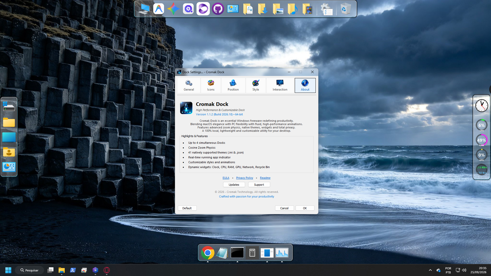
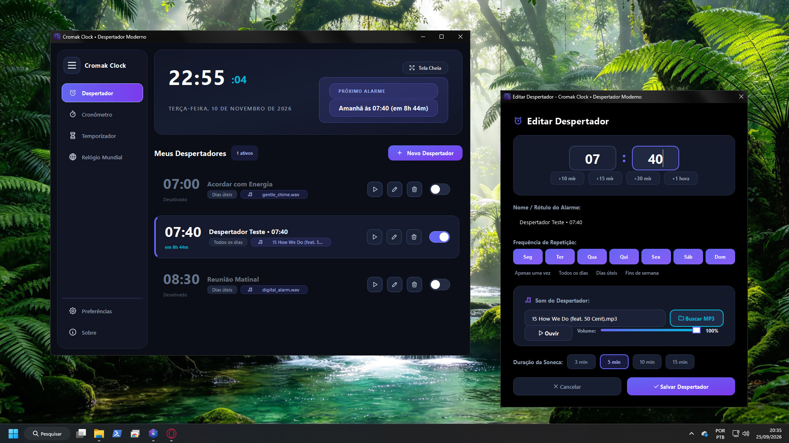
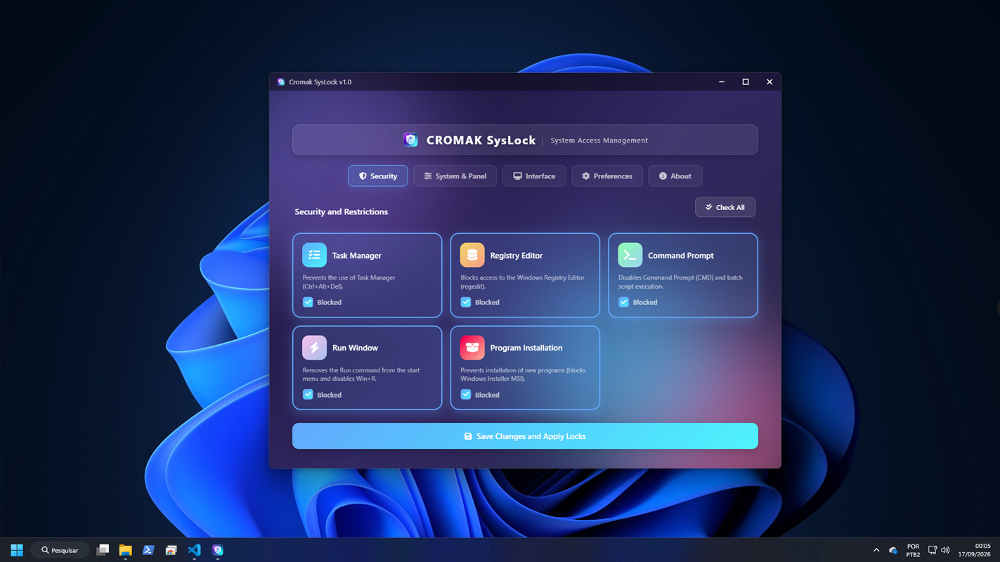
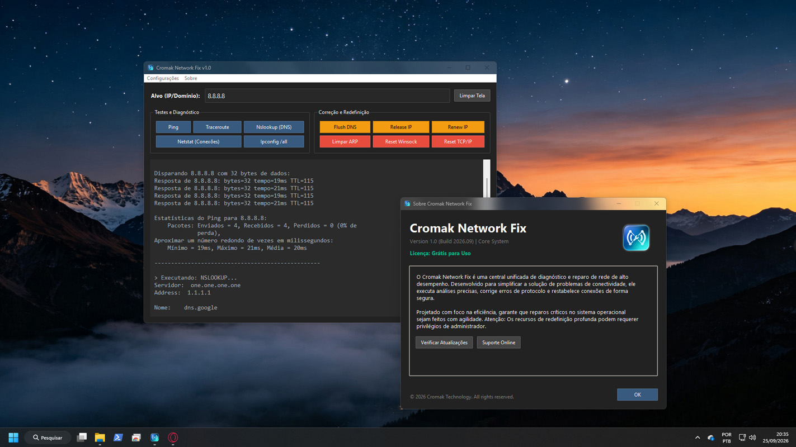
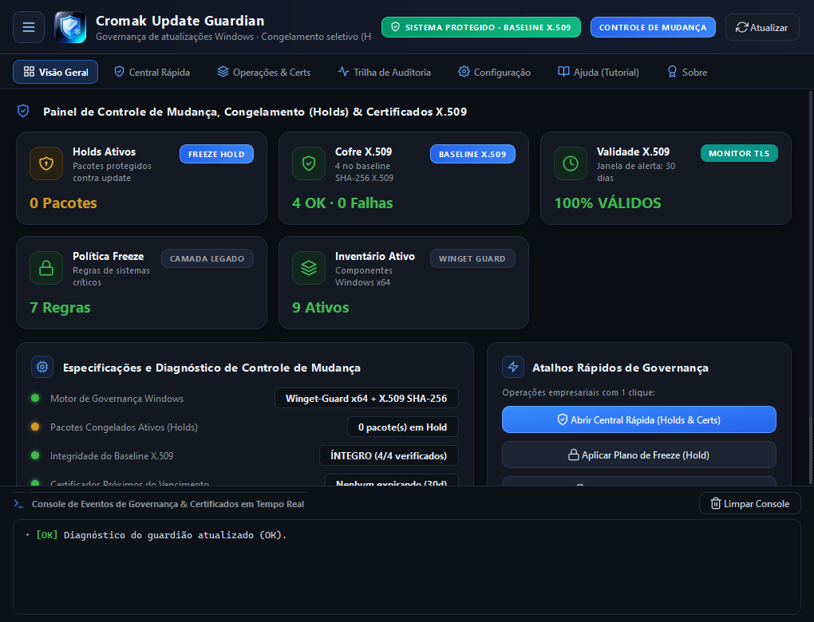
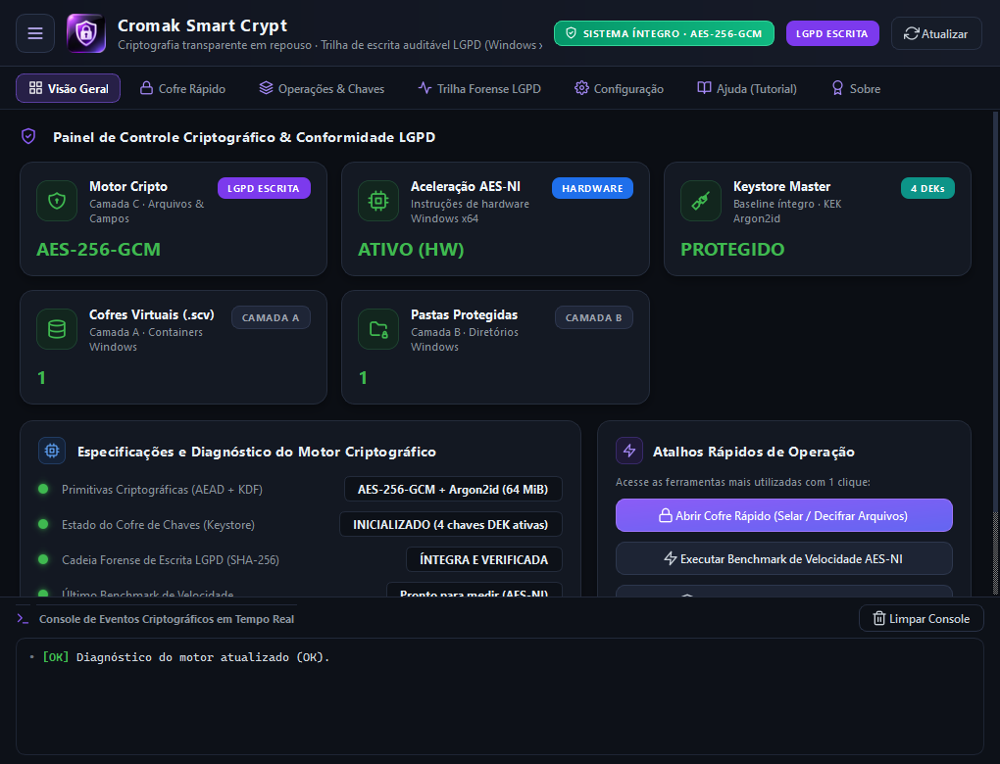
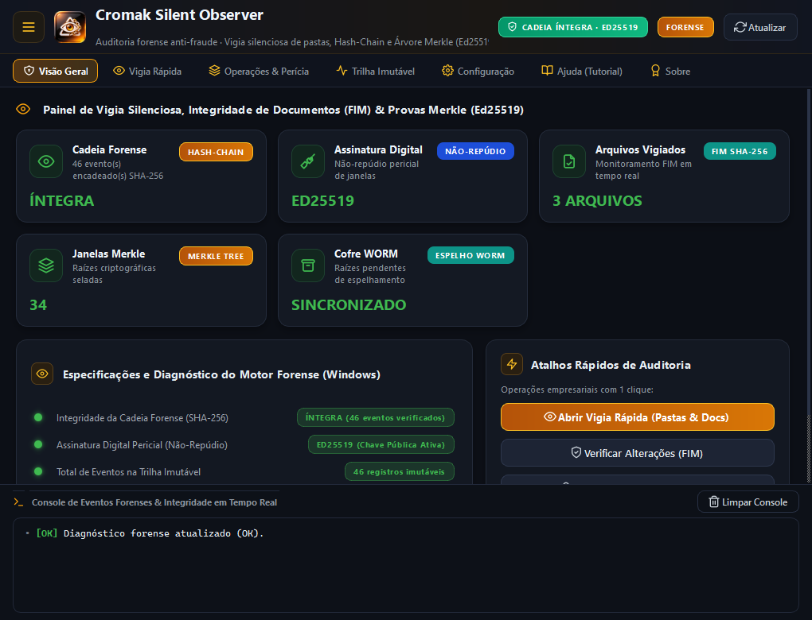

Our Native Solutions
Explore our complete suite of utilities, compilers, and security tools.
Bridge Vox
Focused on accessibility, Bridge is a true "Machine Agent" capable of interacting, reading, and managing your PC operating advanced tools in the background.
Explore ProductDeepClean Suite
Otimização brutal para recuperar a performance do seu PC. Limpeza de nível Kernel, desfragmentação de baixo nível e otimizador de boot.
Explore ProductWeb To Apk Compiler
Transforme sites e sistemas HTML em aplicativos Android nativos e monetizados, com processamento 100% offline no seu computador.
Explore ProductPassword Guard
A fortaleza digital inquebrável. Cofre de senhas 100% offline com criptografia militar AES-256 e monitor de vazamentos na Dark Web.
Explore ProductMetadata Remover
Motor forense para proteger sua privacidade. Remova metadados EXIF ocultos de fotos, áudios e expurgue rastreadores em PDFs.
Explore ProductInstall Compiler
O ponto final do seu código. Reúna seus projetos, scripts e executáveis em instaladores profissionais .exe personalizados e seguros.
Explore ProductPNG To ICO Converter
Precise icon compilation. Legacy matrix support, reverse asset extraction, and high-quality batch image resizing for Windows binaries.
Explore ProductNewTab
Your new Metro UI-style smart shortcut hub. Fully customizable, available locally or via your browser, without telemetry or bloat.
Explore ProductVisualizador de Fotos
The fastest and most responsive image viewer. The classic, nostalgic Windows 7 experience revived in a modern, lightweight, 100% free engine.
Explore Product
Cromak Dock
High-performance taskbar and application launcher for Windows. Smooth Gaussian zoom, up to 4 simultaneous docks, hardware widgets, classic themes, and 100% offline.
Explore Product
Clock & Alarm
Modern alarm clock and multifunctional fullscreen desk clock for Windows. Analog, digital, and retro LED displays, custom MP3 alarms, stopwatch, and pomodoro.
Explore ProductInstall Protector
Intercept threats, block unauthorized executable launches, and audit every process event across your Windows machine effortlessly.
Explore ProductConnection Blackout
Take control of your network. Intercept executable connections and block tracking domains with surgical precision.
Explore Product
SysLock
Instantly disable tools that could compromise the machine's integrity. Restrict or release critical privileges in seconds.
Explore Product
Network Fix
The Ultimate Solution for Windows Connection Problems. We've gathered the most vital Windows network diagnostic routines into a modern, clean interface.
Explore Product
Update Guardian
Windows patch governance and corporate X.509 certificate sentinel. Prevent forced reboots, hold unstable updates, and audit cryptographic trust stores.
Explore Product
Smart Crypt
Hardware-accelerated AEAD encryption at rest (AES-256-GCM + Argon2id). Sealed virtual vaults (.scv), folder hardening, and append-only LGPD audit trails.
Explore Product
Silent Observer
Forensic File Integrity Monitoring (FIM) sentinel. Real-time surveillance with SHA-256 hash chains, Ed25519 digital signatures, and Merkle tree proofs.
Explore Product
Instant Rollback
Sub-second disaster recovery and automated self-healing for POS and ERP terminals. SHA-256 golden snapshots with instant reversion and real-time live diffs.
Explore Product